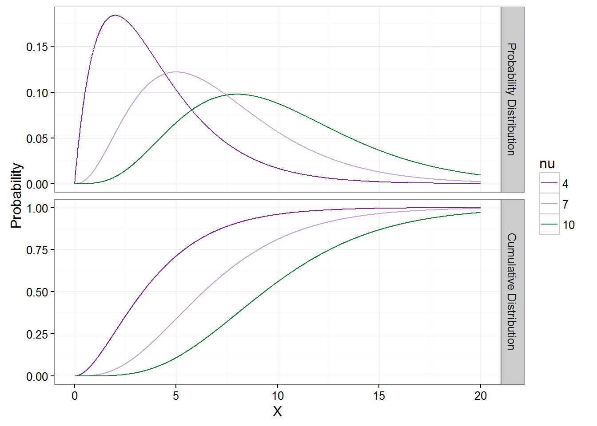

7 The Chi-Square Distribution
7.1 Probability Distribution Function
A random variable \(X\) is said to have a Chi-Square Distribution with parameter \(\nu\) if its probability distribution function is
\[f(x) = \left\{ \begin{array}{ll} \frac{x^{\frac{\nu}{2}-1}e^{-\frac{x}{2}}} {2^{\frac{\nu}{2}}\Gamma(\frac{\nu}{2})} & 0<x,\ 0<\nu\\ 0 & otherwise \end{array} \right. \]
\(\nu\) is commonly referred to as the degrees of freedom.
7.2 Cumulative Distribution Function
The cumulative distribution function for the Chi-Square Distribution cannot be written in closed form. It’s integral form is expressed as \[ F(x) = \left\{ \begin{array}{ll} \displaystyle\int\limits_{0}^{x} \frac{t^{\frac{\nu}{2}-1}e^{-\frac{t}{2}}} {2^{\frac{\nu}{2}}\Gamma(\frac{\nu}{2})} dt & 0<x,\ 0<\nu\\\\ 0 & otherwise \end{array} \right. \]
%New Section \(\displaystyle E(X) = \int\limits_{0}^{\infty}x\frac{x^{\frac{\nu}{2}-1}e^{-\frac{x}{2}}} {2^{\frac{\nu}{2}}\Gamma(\frac{\nu}{2})}dx = \frac{1}{2^{\frac{\nu}{2}}\Gamma(\frac{\nu}{2})} \int\limits_{0}^{\infty}x\cdot x^{\frac{\nu}{2}-1}e^{-\frac{x}{2}}dx = \frac{1}{2^{\frac{\nu}{2}}\Gamma(\frac{\nu}{2})} \int\limits_{0}^{\infty}x^{\frac{\nu}{2}}e^{-\frac{x}{2}}dx\\ \indent = \footnote[1]{\)_{0}{}x{-1}e^{-}dx = ^()\(} \ \ \frac{1}{2^{\frac{\nu}{2}}\Gamma(\frac{\nu}{2})} \Big[\Gamma\Big(\frac{\nu}{2}+1\Big)2^{\frac{\nu}{2}+1}\Big] = \frac{\Gamma(\frac{\nu}{2}+1)2^{\frac{\nu}{2}+1}} {2^{\frac{\nu}{2}}\Gamma(\frac{\nu}{2})} = \frac{\frac{\nu}{2}\Gamma(\frac{\nu}{2})2^{\frac{\nu}{2}+1}} {2^{\frac{\nu}{2}}\Gamma(\frac{\nu}{2})} = \frac{2\nu}{2} = \nu\\\) \(\displaystyle E(X^2) = \int\limits_{0}^{\infty}x^2\frac{x^{\frac{\nu}{2}-1}e^{-\frac{x}{2}}} {2^{\frac{\nu}{2}}\Gamma(\frac{\nu}{2})}dx = \frac{1}{2^{\frac{\nu}{2}}\Gamma(\frac{\nu}{2})} \int\limits_{0}^{\infty}x^2\cdot x^{\frac{\nu}{2}-1}e^{-\frac{x}{2}}dx = \frac{1}{2^{\frac{\nu}{2}}\Gamma(\frac{\nu}{2})} \int\limits_{0}^{\infty}x^{\frac{\nu}{2}+1}e^{-\frac{x}{2}}dx\\ \indent = \footnote[2]{See footnote 1} \ \ \frac{1}{2^{\frac{\nu}{2}}\Gamma(\frac{\nu}{2})} \Big[\Gamma(\frac{\nu}{2}+2)2^{\frac{\nu}{2}+2}\Big] = \frac{\Gamma\Big(\frac{\nu}{2}+2\Big)2^{\frac{\nu}{2}+2}} {2^{\frac{\nu}{2}}\Gamma(\frac{\nu}{2})} = \frac{(\frac{\nu}{2}+1)\Gamma(\frac{\nu}{2}+1)2^{\frac{\nu}{2}+2}} {2^{\frac{\nu}{2}}\Gamma(\frac{\nu}{2})}\\ \indent = \frac{\Big(\frac{\nu}{2}+1\Big)\frac{\nu}{2}\Gamma(\frac{\nu}{2})2^{\frac{\nu}{2}+2}} {2^{\frac{\nu}{2}}\Gamma(\frac{\nu}{2})} = \Big(\frac{\nu}{2}+1\Big)\frac{\nu}{2}\cdot 2^2=2\Big(\frac{\nu}{2}+1\Big)\nu = (\nu+2)\nu=\nu^2+2\nu\)\\ \(\mu = E(X) = \nu \\\) \(\sigma^2 = E(X^2)-E(X)^2 = \nu^2+2\nu-\nu^2 = 2\nu\\\)
%New Section \(\displaystyle M_X(t) = E(e^{tX}) = \int\limits_{0}^{\infty}e^{tx} \frac{x^{\frac{\nu}{2}-1}e^{-\frac{x}{2}}} {2^{\frac{\nu}{2}}\Gamma(\frac{\nu}{2})}dx = \frac{1}{2^{\frac{\nu}{2}}\Gamma(\frac{\nu}{2})} \int\limits_{0}^{\infty}e^{tx}\cdot x^{\frac{\nu}{2}-1}e^{-\frac{x}{2}}dx\\ \indent = \frac{1}{2^{\frac{\nu}{2}}\Gamma(\frac{\nu}{2})} \int\limits_{0}^{\infty}x^{\frac{\nu}{2}-1} e^{tx}e^{-\frac{x}{2}}dx = \frac{1}{2^{\frac{\nu}{2}}\Gamma(\frac{\nu}{2})} \int\limits_{0}^{\infty}x^{\frac{\nu}{2}-1} e^{tx-\frac{x}{2}}dx\\\\ \indent = \frac{1}{2^{\frac{\nu}{2}}\Gamma(\frac{\nu}{2})} \int\limits_{0}^{\infty}x^{\frac{\nu}{2}-1} e^{\frac{2tx}{2}-\frac{x}{2}}dx = \frac{1}{2^{\frac{\nu}{2}}\Gamma(\frac{\nu}{2})} \int\limits_{0}^{\infty}x^{\frac{\nu}{2}-1} e^{-\frac{2tx-x}{2}}dx\\ \indent = \frac{1}{2^{\frac{\nu}{2}}\Gamma(\frac{\nu}{2})} \int\limits_{0}^{\infty}x^{\frac{\nu}{2}-1} e^{-x\frac{-2t+1}{2}}dx = \frac{1}{2^{\frac{\nu}{2}}\Gamma(\frac{\nu}{2})} \int\limits_{0}^{\infty}x^{\frac{\nu}{2}-1} e^{-x\frac{1-2t}{2}}dx\\\\ \indent = \frac{1}{2^{\frac{\nu}{2}}\Gamma(\frac{\nu}{2})} \int\limits_{0}^{\infty}x^{\frac{\nu}{2}-1} e^{\frac{-x}{\frac{2}{1-2t}}}dx = \footnote[1]{\)_{0}{}x{-1}e^{-}dx = ^()\(} \ \ \frac{1}{2^{\frac{\nu}{2}}\Gamma(\frac{\nu}{2})} \Big[\Big(\frac{2}{1-2t}\Big)^{\frac{\nu}{2}}\Gamma(\frac{\nu}{2})\Big]\\ \indent = \frac{2^{\frac{\nu}{2}}\Gamma(\frac{\nu}{2})} {2^{\frac{\nu}{2}}\Gamma(\frac{\nu}{2})(1-2t)^{\frac{\nu}{2}}} = \frac{1}{(1-2t)^{\frac{\nu}{2}}} = (1-2t)^{-\frac{\nu}{2}}\\\) \ \(M_X^{(1)}(t) = -\frac{\nu}{2}(1-2t)^{-\frac{\nu}{2}-1}(-2) = \frac{2\nu}{2}(1-2t)^{-\frac{\nu}{2}-1} = \nu(1-2t)^{-\frac{\nu}{2}-1}\\\\\) \(M_X^{(2)}(t) = (-\frac{\nu}{2}-1)\nu(1-2t)^{-\frac{\nu}{2}-2}(-2) = (\frac{2\nu}{2}+2)\nu(1-2t)^{-\frac{\nu}{2}-2}\\ \indent = (\nu+2)\nu)(1-2t)^{-\frac{\nu}{2}-2} = (\nu^2+2\nu)(1-2t)^{-\frac{\nu}{2}-2}\\\) \ \(M_X^{(1)}(0) = \nu(1-2\cdot 0)^{-\frac{\nu}{2}-1} = \nu(1-0)^{-\frac{\nu}{2}-1} = \nu(1)^{-\frac{\nu}{2}-1} = \nu\\\) \(M_X^{(2)}(0) = (\nu^2+2\nu)(1-2\cdot 0)^{-\frac{\nu}{2}-2} = (\nu^2+2\nu)(1-0)^{-\frac{\nu}{2}-2}\\ \indent = (\nu^2+2\nu)(1)^{-\frac{\nu}{2}-2} = (\nu^2+2\nu)\\\) \ \(E(X) = M_X^{(1)}(0) = \nu\\\) \(E(X^2) = M_X^{(2)}(0) = (\nu^2+2\nu)\\\) \ \(\mu = E(X) = \nu \\\) \(\sigma^2 = E(X^2)-E(X)^2 = \nu^2+2\nu-\nu^2 = 2\nu\\\)
%New Section Let \(x_1,x_2,\ldots,x_n\) be a random sample from a Chi-square distribution with parameter \(\nu\).
\(\displaystyle L(\theta) = f(x_1|\theta) f(x_2|\theta) \cdots f(x_n|\theta)\\ \indent = \frac{x_1^{\nu/2-1}e^{-x_1/2}}{2^{\nu/2}\Gamma\big(\frac{\nu}{2}\big)} \cdot \frac{x_2^{\nu/2-1}e^{-x_2/2}}{2^{\nu/2}\Gamma\big(\frac{\nu}{2}\big)} \cdots \frac{x_n^{\nu/2-1}e^{-x_n/2}}{2^{\nu/2}\Gamma\big(\frac{\nu}{2}\big)}\\ \indent = \prod\limits_{i=1}^{n}\frac{x_i^{\nu/2-1}e^{-x_i/2}}{2^{\nu/2}\Gamma\big(\frac{\nu}{2}\big)} = \bigg(2^{\nu/2}\Gamma\Big(\frac{\nu}{2}\Big)\bigg) \prod\limits_{i=1}^{n}x_i^{\nu/2-1}e^{-x_i/2}\\ \indent = \bigg(2^{\nu/2}\Gamma\Big(\frac{\nu}{2}\Big)\bigg) \cdot \exp\bigg\{ \sum\limits_{i=1}^{n}\frac{x_i}{2} \bigg\} \cdot \prod\limits_{i=1}^{n}x_i^{\nu/2-1}\\ \indent = \bigg(2^{\nu/2}\Gamma\Big(\frac{\nu}{2}\Big)\bigg) \cdot \exp\bigg\{ \frac{1}{2}\sum\limits_{i=1}^{n}x_i \bigg\} \cdot \prod\limits_{i=1}^{n}x_i^{\nu/2-1}\)
\(\displaystyle \ell(\theta) = \ln\big(L(\theta)\big) = \ln\Bigg[ \bigg(2^{\nu/2}\Gamma\Big(\frac{\nu}{2}\Big)\bigg) \cdot \exp\bigg\{ \frac{1}{2}\sum\limits_{i=1}^{n}x_i \bigg\} \cdot \prod\limits_{i=1}^{n}x_i^{\nu/2-1} \Bigg]\\ \indent = \ln\Bigg[ \bigg( 2^{\nu/2}\Gamma \Big( \frac{\nu}{2} \Big) \bigg) \Bigg] + \ln\Bigg( \exp\bigg\{ \frac{1}{2}\sum\limits_{i=1}^{n}x_i \bigg\} \Bigg) + \ln\bigg(\prod\limits_{i=1}^{n}x_i^{\nu/2-1}\bigg)\\ \indent = -n \ln\bigg( 2^{\nu/2}\Gamma \Big( \frac{\nu}{2} \Big) \bigg) + \frac{1}{2}\sum\limits_{i=1}^{n}x_i + \bigg( \frac{\nu}{2}-1 \bigg) \ln\bigg( \prod\limits_{i=1}^{n}x_i \bigg)\\ \indent = -n\bigg( \ln(2^{\nu/2}) + \Gamma\Big(\frac{\nu}{2}\Big) \bigg) + \frac{1}{2}\sum\limits_{i=1}^{n}x_i + \bigg( \frac{\nu}{2}-1 \bigg) \sum\limits_{i=1}^{n}\ln x_i\\ \indent = -n\bigg(\frac{\nu}{2} \ln 2 + \ln \Gamma\Big( \frac{\nu}{2} \Big) \bigg) + \frac{1}{2}\sum\limits_{i=1}^{n}x_i + \bigg( \frac{\nu}{2}-1 \bigg) \sum\limits_{i=1}^{n}\ln x_i\\ \indent = -\frac{n\nu}{2} \ln 2 - n\ln \Gamma\Big( \frac{\nu}{2} \Big) + \frac{1}{2}\sum\limits_{i=1}^{n}x_i + \bigg( \frac{\nu}{2}-1 \bigg) \sum\limits_{i=1}^{n}\ln x_i\)
\(\displaystyle \frac{d\ell}{d\nu} = -\frac{n}{2} \ln 2 - \frac{n}{\Gamma\big(\frac{\nu}{2}\big)} \Gamma^\prime\Big(\frac{\nu}{2}\Big) \cdot \frac{1}{2} + 0 + \frac{1}{2} \sum\limits_{i=1}^{n}\ln x_i\\ \indent = -\frac{n}{2} \ln 2 - \frac{n}{2\Gamma\big(\frac{\nu}{2}\big)} \Gamma^\prime\Big(\frac{\nu}{2}\Big) + \frac{1}{2} \sum\limits_{i=1}^{n}\ln x_i\\\) \ \ \(\displaystyle 0 = -\frac{n}{2} \ln 2 - \frac{n}{2\Gamma\big(\frac{\nu}{2}\big)} \Gamma^\prime\Big(\frac{\nu}{2}\Big) + \frac{1}{2} \sum\limits_{i=1}^{n}\ln x_i\\ \indent\Rightarrow \frac{n}{2} \ln 2 - \frac{1}{2}\sum\limits_{i=1}^{n}\ln x_i = -\frac{n}{2\Gamma\big(\frac{\nu}{2}\big)} \Gamma^\prime\Big(\frac{\nu}{2}\Big)\\ \indent\Rightarrow n\ln 2 - \sum\limits_{i=1}^{n}\ln x_i = -\frac{n}{\Gamma\big(\frac{\nu}{2}\big)} \Gamma^\prime\Big(\frac{\nu}{2}\Big)\\ \indent\Rightarrow \frac{\sum\limits_{i=1}^{n}\ln x_i - n\ln 2}{n} = \frac{\Gamma^\prime\big(\frac{\nu}{2}\big)}{\Gamma\big(\frac{\nu}{2}\big)}\\\) \ Due to the complexity of the Gamma function in this equation, no solution can be developed for \(\nu\) in closed form. Thus, we have to rely on numerical methods to obtain a solution to the equation and find the maximum likelihood estimator.
%New Section
%New Subsection \(\displaystyle \int\limits_{0}^{\infty}\frac{x^{\frac{\nu}{2}-1}e^{-\frac{x}{2}}} {2^{\frac{\nu}{2}}\Gamma(\frac{\nu}{2})}dx = 1\)\ \
%New Subsection Let \(X_1 , X_2 , \ldots , X_n\) be independent Chi-Square random variables with parameter \(\nu_i\), that is \(X_i\sim\chi^2(\nu_i),\ i=1,2,\ldots,n\).\ Suppose \(Y = \sum\limits_{i=1}^{n}X_i\). Then \(Y\sim\chi^2(\sum\limits_{i=1}^{n}\nu_i)\).\ \
%New Subsection If \(Z\sim N(0,1)\), then \(Z^2\sim\chi^2(1)\).\ \